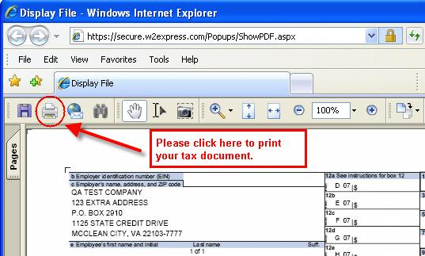

For security reasons you are not able to print your tax document directly from the web browser.
To print this document follow these instructions. (Feel free to print these for later use).
- Click the Adobe print icon in the toolbar on the original page (please see the image below for assistance with this)
- Follow the instructions given to you by Adobe Acrobat to complete the process
